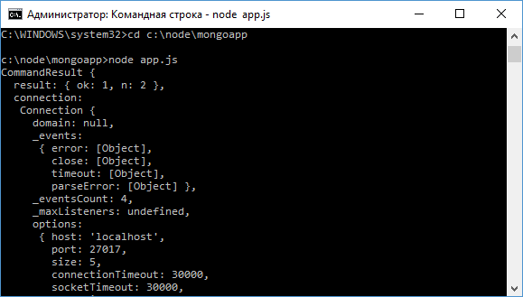

Удаление документов в MongoDB
Удалять документы в MongoDB можно различными способами.
Здесь надо отметить следующие методы коллекции:
- deleteMany(): удаляет все документы, которые соответствуют определенному критерию
- deleteOne(): удаляет один документ, который соответствует определенному критерию
- findOneAndDelete(): получает и удаляет один документ, который соответствует определенному критерию
- drop(): удаляет всю коллекцию
deleteMany
Удалим всех пользователей, у которых имя "Tom":
var mongoClient = require("mongodb").MongoClient;
mongoClient.connect("mongodb://localhost:27017/usersdb", function(err, db){
if(err) return console.log(err);
db.collection("users").deleteMany({name: "Tom"}, function(err, result){
console.log(result);
db.close();
});
});
Первый параметр в методе - фильтр документов, а второй - функция обратного вызова, в которой мы можем получить результат удаления.
При этом результат удаления будет представлять сложный объект, содержащий подробную информацию:
deleteOne
Метод deleteOne() аналогичен методу deleteMany() за тем исключением, что удаляет только один объект:
mongoClient.connect("mongodb://localhost:27017/usersdb", function(err, db){
if(err) return console.log(err);
db.collection("users").deleteOne({name: "Bob"}, function(err, result){
console.log(result);
db.close();
});
});
findOneAndDelete
Метод findOneAndDelete() удаляет один документ по определенному критерию, но по сравнению с методом deleteOne() он возвращает удаленный документ:
mongoClient.connect("mongodb://localhost:27017/usersdb", function(err, db){
if(err) return console.log(err);
db.collection("users").findOneAndDelete({age: 21}, function(err, result){
console.log(result);
db.close();
});
});
drop
Метод drop() удаляет всю коллекцию:
db.collection("users").drop(function(err, result){
console.log(result);
db.close();
});